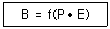
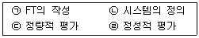
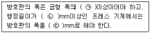
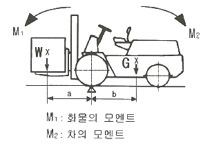
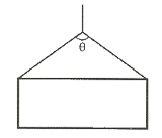
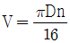
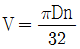
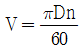
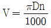
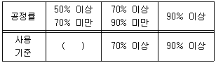

산업안전산업기사 (2019-08-04 기출문제)
1과목: 산업안전관리론
1. 산업안전보건법령상 안전·보건표지의 종류에 있어 “안전모 착용”은 어떤 표지에 해당하는가?
- 경고표지
- 지시표지
- 안내표지
- 관계자 외 출입 금지
(정답률: 91%)

2. 산업안전보건법상 특별 안전·보건교육 대상 작업이 아닌 것은?
- 건설용 리프트·곤돌라를 이용한 작업
- 전압이 50볼트(V)인 정전 및 활선작업
- 화학설비 중 반응기, 교반기·추출기의 사용 및 세척작업
- 액화석유가스·수소가스 등 인화성 가스 또는 폭발성 물질 중 가스의 발생장치 취급 작업
(정답률: 84%)
3. 사고의 간접원인이 아닌 것은?
- 물적 원인
- 정신적 원인
- 관리적 원인
- 신체적 원인
(정답률: 86%)
4. 다음 재해손실 비용 중 직접손실비에 해당하는 것은?
- 진료비
- 입원 중의 잡비
- 당일 손실 시간손비
- 구원, 연락으로 인한 부동 임금
(정답률: 84%)
5. 기업조직의 원리 중 지시 일원화의 원리에 대한 설명으로 가장 적절한 것은?
- 지시에 따라 최선을 다해서 주어진 임무나 기능을 수행하는 것
- 책임을 완수하는 데 필요한 수단을 상사로부터 위임받은 것
- 언제나 직속 상사에게서만 지시를 받고 특정 부하 직원들에게만 지시하는 것
- 가능한 조직의 각 구성원이 한 가지 특수 직무만을 담당하도록 하는 것
(정답률: 79%)
6. 안전모에 관한 내용으로 옳은 것은?
- 안전모의 종류는 안전모의 형태로 구분한다.
- 안전모의 종류는 안전모의 색상으로 구분한다.
- A형 안전모 : 물체의 낙하, 비래에 의한 위험을 방지, 경감시키는 것으로 내전압성이다.
- AE형 안전모 : 물체의 낙하, 비래에 의한 위험을 방지 또는 경감하고 머리 부위의 감전에 의한 위험을 방지하기 위한 것으로 내전압성이다.
(정답률: 85%)
7. 어느 공장의 연평균근로자가 180명이고, 1년간 사상자가 6명이 발생했다면, 연천인율은 약 얼마인가? (단, 근로자는 하루 8시간씩 연간 300일을 근무한다.)
- 12.79
- 13.89
- 33.33
- 43.69
(정답률: 58%)
8. 교육의 기본 3요소에 해당하지 않는 것은?
- 교육의 형태
- 교육의 주체
- 교육의 객체
- 교육의 매개체
(정답률: 80%)
9. 안전교육 방법 중 TWI(Training Within Industry)의 교육과정이 아닌 것은?
- 작업지도 훈련
- 인간관계 훈련
- 정책수립 훈련
- 작업방법 훈련
(정답률: 76%)
10. 안전심리의 5대 요소 중 능동적인 감각에 의한 자극에서 일어난 사고의 결과로서, 사람의 마음을 움직이는 원동력이 되는 것은?
- 기질(temper)
- 동기(motive)
- 감정(emotion)
- 습관(custom)
(정답률: 75%)
11. 지적확인이란 사람의 눈이나 귀 등 오감의 감각기관을 총동원해서 작업의 정확성과 안전을 확인하는 것이다. 지적확인과 정확도가 올바르게 짝지어진 것은?
- 지적 확인한 경우 - 0.3%
- 확인만 하는 경우 - 1.25%
- 지적만 하는 경우 - 1.0%
- 아무 것도 하지 않은 경우 - 1.8%
(정답률: 62%)
12. 토의(회의)방식 중 참가자가 다수인 경우에 전원을 토의에 참가시키기 위하여 소집단으로 구분하고, 각각 자유토의를 행하여 의견을 종합하는 방식은?
- 포럼(forum)
- 심포지엄(symposium)
- 버즈 세션(buzz session)
- 패널 디스커션(panel discussion)
(정답률: 63%)
13. 매슬로우(Maslow)의 욕구위계이론 5단계를 올바르게 나열한 것은?
- 생리적 욕구 → 안전의 욕구 → 사회적욕구 → 존경의 욕구 → 자아 실현의 욕구
- 생리적 욕구 → 안전의 욕구 → 사회적욕구 → 자아 실현의 욕구 → 존경의 욕구
- 안전의 욕구 → 생리적 욕구 → 사회적욕구 → 자아 실현의 욕구 → 존경의 욕구
- 안전의 욕구 → 생리적 욕구 → 사회적욕구 → 존경의 욕구 → 자아 실현의 욕구
(정답률: 85%)
14. 레빈(Lewin)의 법칙에서 환경조건(E)에 포함되는 것은?

- 지능
- 소질
- 적성
- 인간관계
(정답률: 83%)
15. 기기의 적정한 배치, 변형, 균열, 손상, 부식 등의 유무를 육안, 촉수 등으로 조사 후 그 설비별로 정해진 점검기준에 따라 양부를 확인하는 점검은?
- 외관점검
- 작동점검
- 기능점검
- 종합점검
(정답률: 82%)
16. 재해누발자의 유형 중 작업이 어렵고, 기계설비에 결함이 있기 때문에 재해를 일으키는 유형은?
- 상황성 누발자
- 습관성 누발자
- 소질성 누발자
- 미숙성 누발자
(정답률: 79%)
17. 무재해운동의 3원칙에 해당되지 않은 것은?
- 참가의 원칙
- 무의 원칙
- 예방의 원칙
- 선취의 원칙
(정답률: 73%)
18. 적응기제(Adjustment Mechanism) 중 방어적 기제(Defence Mechanism)에 해당하는 것은?
- 고립(Isolation)
- 퇴행(Regression)
- 억압(Suppression)
- 합리화(Rationalization)
(정답률: 82%)
19. 안전관리 조직의 형태 중 참모식(Staff) 조직에 대한 설명으로 틀린 것은?
- 이 조직은 분업의 원칙을 고도로 이용한 것이며, 책임 및 권한이 직능적으로 분담되어 있다.
- 생산 및 안전에 관한 명령이 각각 별개의 계통에서 나오는 결함이 있어, 응급처치 및 통제수속이 복잡하다.
- 참모(Staff)의 특성상 업무관장은 계획안의 작성, 조사, 점검결과에 따른 조언, 보고에 머무는 것이다.
- 참모(Staff)는 각 생산라인의 안전 업무를 직접 관장하고 통제한다.
(정답률: 60%)
20. 재해의 근원이 되는 기계장치나 기타의 물(物) 또는 환경을 뜻하는 것은?
- 상해
- 가해물
- 기인물
- 사고의 형태
(정답률: 75%)
2과목: 인간공학 및 시스템안전공학
21. 정적자세 유지 시, 진전(tremor)을 감소시킬 수 있는 방법으로 틀린 것은?
- 시각적인 참조가 있도록 한다.
- 손이 심장 높이에 있도록 유지한다.
- 작업대상물에 기계적 마찰이 있도록 한다.
- 손을 떨지 않으려고 힘을 주어 노력한다.
(정답률: 72%)
22. 인간의 과오를 정량적으로 평가하기 위한 기법으로, 인간과오의 분류시스템과 확률을 계산하는 안전성 평가기법은?
- THERP
- FTA
- ETA
- HAZOP
(정답률: 70%)
23. 어떤 기기의 고장률이 시간당 0.002로 일정하다고 한다. 이 기기를 100시간 사용했을 때 고장이 발생할 확률은?
- 0.1813
- 0.2214
- 0.6253
- 0.8187
(정답률: 39%)
24. 시스템의 수명곡선에 고장의 발생형태가 일정하게 나타나는 기간은?
- 초기고장기간
- 우발고장기간
- 마모고장기간
- 피로고장기간
(정답률: 63%)
25. 작업장에서 발생하는 소음에 대한 대책으로 가장 먼저 고려하여야 할 적극적인 방법은?
- 소음원의 통제
- 소음원의 격리
- 귀마개 등 보호구의 착용
- 덮개 등 방호장치의 설치
(정답률: 67%)
26. 반복적 노출에 따라 민감성이 가장 쉽게 떨어지는 표시장치는?
- 시각 표시장치
- 청각 표시장치
- 촉각 표시장치
- 후각 표시장치
(정답률: 77%)
27. Fussell의 알고리즘으로 최소 컷셋을 구하는 방법에 대한 설명으로 틀린 것은?
- OR 게이트는 항상 컷셋의 수를 증가시킨다.
- AND 게이트는 항상 컷셋의 크기를 증가시킨다.
- 중복 및 반복되는 사건이 많은 경우에 적용하기 적합하고 매우 간편하다.
- 톱(top)사상을 일으키기 위해 필요한 최소한의 컷셋이 최소 컷셋이다.
(정답률: 59%)
28. FMEA 기법의 장점에 해당하는 것은?
- 서식이 간단하다.
- 논리적으로 완벽하다.
- 해석의 초점이 인간에 맞추어져 있다.
- 동시에 복수의 요소가 고장나는 경우의 해석이 용이하다.
(정답률: 59%)
29. 60fL의 광도를 요하는 시각 표시장치의 반사율이 75%일 때, 소요조명은 몇 fc인가?
- 75
- 80
- 85
- 90
(정답률: 53%)
30. FT에서 사용되는 사상기호에 대한 설명으로 맞는 것은?
- 위험지속기호 : 정해진 횟수 이상 입력이 될 때 출력이 발생한다.
- 억제게이트 : 조건부 사건이 일어나는 상황하에서 입력이 발생할 때 출력이 발생한다.
- 우선전 AND 게이트 : 사건이 발생할 때 정해진 순서대로 복수의 출력이 발생한다.
- 베타적 OR 게이트 : 동시에 2개 이상의 입력이 존재하는 경우에 출력이 발생한다.
(정답률: 52%)
31. 온도가 적정 온도에서 낮은 온도로 내려갈 때의 인체반응으로 옳지 않은 것은?
- 발한을 시작
- 직장온도가 상승
- 피부온도가 하강
- 혈액은 많은 양이 몸의 중심부를 순환
(정답률: 68%)
32. 인간공학의 연구 방법에서 인간-기계 시스템을 평가하는 척도의 요건으로 적합하지 않은 것은?
- 적절성, 타당성
- 무오염성
- 주관성
- 신뢰성
(정답률: 77%)
33. NIOSH의 연구에 기초하여, 목과 어깨 부위의 근골격계질환 발생과 인과관계가 가장 적은 위험요인은?
- 진동
- 반복작업
- 과도한 힘
- 작업자세
(정답률: 78%)
34. 인간 - 기계 시스템에서의 기본적인 기능에 해당하지 않는 것은?
- 행동 기능
- 정보의 설계
- 정보의 수용
- 정보의 저장
(정답률: 58%)
35. 시력과 대비감도에 영향을 미치는 인자에 해당하지 않는 것은?
- 노출시간
- 연령
- 주파수
- 휘도 수준
(정답률: 75%)
36. 조정장치를 3cm움직였을 때 표시장치의 지침이 5cm움직였다면, C/R비는 얼마인가?
- 0.25
- 0.6
- 1.6
- 1.7
(정답률: 74%)
37. 필요한 작업 또는 절차의 잘못된 수행으로 발생하는 과오는?
- 시간적 과오(time error)
- 생략적 과오(omission error)
- 순서적 과오(sequential error)
- 수행적 과오(commision error)
(정답률: 62%)
38. 일반적인 FTA 기법의 순서로 맞는 것은?

- ㉠ → ㉡ → ㉢ → ㉣
- ㉠ → ㉡ → ㉣ → ㉢
- ㉡ → ㉠ → ㉢ → ㉣
- ㉡ → ㉠ → ㉣ → ㉢
(정답률: 64%)
39. 인체측정치를 이용한 설계에 관한 설명으로 옳은 것은?
- 평균치를 기준으로 한 설계를 제일 먼저 고려한다.
- 의자의 깊이와 너비는 모두 작은 사람을 기준으로 설계한다.
- 자세와 동작에 따라 고려해야 할 인체측정치수가 달라진다.
- 큰 사람을 기준으로 한 설계는 인체측정치의 5%tile을 사용한다.
(정답률: 72%)
40. 제어장치와 표시장치에 있어 물리적 형태나 배열을 유사하게 설계하는 것은 어떤 양립성(compatibility)의 원칙에 해당하는가?
- 시각적 양립성(visual compatibility)
- 양식 양립성(modality compatibility)
- 공간적 양립성(spatial compatibility)
- 개념적 양립성(conceptual compatibility)
(정답률: 68%)
3과목: 기계위험방지기술
41. 프레스기의 방호장치의 종류가 아닌 것은?
- 가드식
- 초음파식
- 광전자식
- 양수조작식
(정답률: 72%)
42. 다음 중 프레스의 안전작업을 위하여 활용하는 수공구로 가장 거리가 먼 것은?
- 브러시
- 진공 컵
- 마그넷 공구
- 플라이어(집게)
(정답률: 57%)
43. 연삭기에서 숫돌의 바깥지름이 180mm라면, 평형 플랜지의 바깥지름은 몇 mm 이상이어야 하는가?
- 30
- 36
- 45
- 60
(정답률: 74%)
44. 산업안전보건법령에 따라 컨베이어에 부착해야 할 방호장치로 적합하지 않은 것은?
- 비상정지장치
- 과부하방지장치
- 역주행방지장치
- 덮개 또는 낙하방지용 울
(정답률: 63%)
45. 보일러의 방호장치로 적절하지 않은 것은?
- 압력방출장치
- 과부하방지장치
- 압력제한 스위치
- 고저수위 조절장치
(정답률: 58%)
46. 프레스의 손쳐내기식 방호장치에서 방호판의 기준에 대한 설명이다. ( )에 들어갈 내용으로 맞는 것은?

- ㉠ 1/2, ㉡ 300, ㉢ 200
- ㉠ 1/2, ㉡ 300, ㉢ 300
- ㉠ 1/3, ㉡ 300, ㉢ 200
- ㉠ 1/3, ㉡ 300, ㉢ 300
(정답률: 61%)
47. 선반작업에서 가공물의 길이가 외경에 비하여 과도하게 길 때, 절삭저항에 의한 떨림을 방지하기 위한 장치는?
- 센터
- 심봉
- 방진구
- 돌리개
(정답률: 74%)
48. 산업안전보건법령에 따라 목재가공용 기계에 설치하여야 하는 방호장치에 대한 내용으로 틀린 것은?
- 목재가공용 둥근톱기계에는 분할날 등 반발예방장치를 설치하여야 한다.
- 목재가공용 둥근톱기계에는 톱날접촉예방장치를 설치하여야 한다.
- 모떼기기계에는 가공 중 목재의 회전을 방지하는 회전방지장치를 설치하여야 한다.
- 작업대상물이 수동으로 공급되는 동력식 수동대패기계에 날접촉예방장치를 설치하여야 한다.
(정답률: 66%)
49. 다음 중 산소-아세틸렌 가스용접 시 역화의 원인과 가장 거리가 먼 것은?
- 토치의 과열
- 토치 팁의 이물질
- 산소 공급의 부족
- 압력조정기의 고장
(정답률: 76%)
50. 그림과 같은 지게차가 안정적으로 작업할 수 있는 상태의 조건으로 적합한 것은?

- M1 ＜ M2
- M1 ＞ M2
- M1 ≧ M2
- M1 ＞ 2M2
(정답률: 79%)
51. 그림과 같이 2줄의 와이어로프로 중량물을 달아 올릴 때, 로프에 가장 힘이 적게 걸리는 각도(θ)는?

- 30°
- 60°
- 90°
- 120°
(정답률: 65%)
52. 기계 설비의 안전조건에서 구조적 안전화에 해당하지 않는 것은?
- 가공결함
- 재료결함
- 설계상의 결함
- 방호장치의 작동결함
(정답률: 53%)
53. 2개의 회전체가 회전운동을 할 때에 물림점이 발생할 수 있는 조건은?
- 두 개의 회전체 모두 시계 방향으로 회전
- 두 개의 회전체 모두 시계 반대 방향으로 회전
- 하나는 시계 방향으로 회전하고 다른 하나는 정지
- 하나는 시계 방향으로 회전하고 다른 하나는 시계 반대 방향으로 회전
(정답률: 77%)
54. 양수조작식 방호장치에서 누름버튼 상호간의 내측 거리는 몇 mm 이상이어야 하는가?
- 250
- 300
- 350
- 400
(정답률: 77%)
55. 기계의 왕복운동을 하는 동작 부분과 움직임이 없는 고정 부분 사이에 형성되는 위험점으로 프레스 등에서 주로 나타나는 것은?
- 물림점
- 협착점
- 절단점
- 회전말림점
(정답률: 74%)
56. 연삭기의 방호장치에 해당하는 것은?
- 주수 장치
- 덮개 장치
- 제동 장치
- 소화 장치
(정답률: 74%)
57. 산업안전보건법령에 따라 달기 체인을 달비계에 사용해서는 안되는 경우가 아닌 것은?
- 균열이 있거나 심하게 변형된 것
- 달기 체인의 한 꼬임에서 끊어진 소선의 수가 10% 이상인 것
- 달기 체인의 길이가 달기 체인이 제조된 때의 길이의 5%를 초과한 것
- 링의 단면지름이 달기 체인이 제조된 때의 해당 링의 지름의 10% 초과하여 감소한 것
(정답률: 51%)
58. 연삭기의 원주 속도 V(m/s)를 구하는 식은? (단, D는 숫돌의 지름(m), n은 회전수(rpm) 이다.)




(정답률: 68%)
59. 산업용 로봇의 동작 형태별 분류에 해당하지 않는 것은?
- 관절 로봇
- 극좌표 로봇
- 수치제어 로봇
- 원통좌표 로봇
(정답률: 54%)
60. 기계설비 외형의 안전화 방법이 아닌 것은?
- 덮개
- 안전 색채 조절
- 가드(guard)의 설치
- 페일세이프(fail safe)
(정답률: 71%)
4과목: 전기 및 화학설비위험방지기술
61. 액체가 관내를 이동할 때에 정전기가 발생하는 현상은?
- 마찰대전
- 박리대전
- 분출대전
- 유동대전
(정답률: 76%)
62. 전기기계·기구의 누전에 의한 감전의 위험을 방지하기 위하여 코드 및 플러그를 접속하여 사용하는 전기기계·기구 중 노출된 비충전 금속체에 접지를 실시하여야 하는 것이 아닌 것은?
- 사용전압이 대지전압 110V인 기구
- 냉장고·세탁기·컴퓨터 및 주변기기 등과 같은 고정형 전기기계 · 기구
- 고정형·이동형 또는 휴대형 전동기계·기구
- 휴대형 손전등
(정답률: 65%)
63. 도체의 정전용량 C=20μF, 대전전위(방전 시 전압) V=3kV 일 때 정전에너지(J)는?
- 45
- 90
- 180
- 360
(정답률: 50%)
64. 사람이 접촉될 우려가 있는 장소에서 제1종 접지공사의 접지선을 시설할 때 접지극의 최소 매설깊이는?
- 지하 30cm 이상
- 지하 50cm 이상
- 지하 75cm 이상
- 지하 90cm 이상
(정답률: 64%)
65. 산업안전보건기준에 관한 규칙에 따라 꽂음접속기를 설치 또는 사용하는 경우 준수하여야 할 사항으로 틀린 것은?
- 서로 다른 전압의 꽂음접속기는 서로 접속되지 아니한 구조의 것을 사용할 것
- 습윤한 장소에 사용되는 꽂음접속기는 방수형 등 그 장소에 적합한 것을 사용할 것
- 근로자가 해당 꽂음접속기를 접속시킬 경우에는 땀 등으로 젖은 손으로 취급하지 않도록 할 것
- 꽂음접속기에 잠금장치가 있을 때에는 접속 후 개방하여 사용할 것
(정답률: 73%)
66. 인체가 현저히 젖어 있거나 인체의 일부가 금속성의 전기기구 또는 구조물에 상시 접촉되어 있는 상태의 허용접촉전압(V)는?
- 2.5V 이하
- 25V 이하
- 50V 이하
- 제한 없음
(정답률: 73%)
67. 방폭전기설비에서 1종 위험장소에 해당하는 것은?
- 이상상태에서 위험 분위기를 발생할 염려가 있는 장소
- 보통장소에서 위험 분위기를 발생할 염려가 있는 장소
- 위험분위기가 보통의 상태에서 계속해서 발생하는 장소
- 위험 분위기가 장기간 또는 거의 조성되지 않는 장소
(정답률: 55%)
68. 과전류차단기로 시설하는 퓨즈 중 고압전로에 사용하는 포장 퓨즈는 정격전류의 몇 배를 견딜 수 있어야 하는가?
- 1.1배
- 1.3배
- 1.6배
- 2.0배
(정답률: 50%)
69. 접지공사의 종류 별로 접지선의 굵기 기준이 바르게 연결된 것은?(관련 규정 개정전 문제로 여기서는 기존 정답인 4번을 누르면 정답 처리됩니다. 자세한 내용은 해설을 참고하세요.)
- 제1종 접지공사 - 공칭단면적 1.6mm2 이상의 연동선
- 제2종 접지공사 - 공칭단면적 2.6mm2 이상의 연동선
- 제3종 접지공사 - 공칭단면적 2mm2 이상의 연동선
- 특별 제3종 접지공사 - 공칭단면적 2.5mm2 이상의 연동선
(정답률: 72%)
70. 신선한 공기 또는 불연성가스 등의 보호기체를 용기의 내부에 압입함으로써 내부의 압력을 유지하여 폭발성가스가 침입하지 않도록 하는 방폭구조는?
- 내압 방폭구조
- 압력 방폭구조
- 안전증 방폭구조
- 특수 방진 방폭구조
(정답률: 56%)
71. 연소의 3요소에 해당되지 않는 것은?
- 가연물
- 점화원
- 연쇄반응
- 산소공급원
(정답률: 76%)
72. 산업안전보건법령에서 정한 위험물을 기준량 이상으로 제조하거나 취급하는 설비 중 특수화학설비에 해당하지 않는 것은?
- 발열반응이 일어나는 반응장치
- 증류·정류·증발·추출 등 분리를 하는 장치
- 가열로 또는 가열기
- 고로 등 점화기를 직접 사용하는 열교환기류
(정답률: 49%)
73. 프로판(C3H8)의 완전연소 조성농도는 약 몇 vol%인가?
- 4.02
- 4.19
- 5.⑤
- 5.19
(정답률: 40%)
74. 물과의 반응 또는 열에 의해 분해되어 산소를 발생하는 것은?
- 적린
- 과산화나트륨
- 유황
- 이황화탄소
(정답률: 61%)
75. 위험물안전관리법령상 제3류 위험물이 아닌 것은?
- 황화린
- 금속나트륨
- 황린
- 금속칼륨
(정답률: 50%)
76. 환풍기가 고장난 장소에서 인화성 액체를 취급할 때, 부주의로 마개를 막지 않았다. 여기서 작업자가 담배를 피우기 위해 불을 켜는 순간 인화성 액체에서 불꽃이 일어나는 사고가 발생하였다. 이와 같은 사고의 발생 가능성이 가장 높은 물질은? (단, 작업현장의 온도는 20℃이다.)
- 글리세린
- 중유
- 디에틸에테르
- 경유
(정답률: 68%)
77. 유해물질의 농도를 c, 노출시간을 t라 할 때 유해물지수(k)와의 관계인 Haber의 법칙을 바르게 나타낸 것은?
- k = c + t
- k = c / k
- k = c × t
- k = c - t
(정답률: 73%)
78. 20℃인 1기압의 공기를 압축비 3으로 단열압축하였을 때, 온도는 약 몇 ℃가 되겠는가? (단, 공기의 비열비는 1.4 이다.)
- 84
- 128
- 182
- 1091
(정답률: 48%)
79. 절연성 액체를 운반하는 관에서 정전기로 인해 일어나는 화재 및 폭발을 예방하기 위한 방법으로 가장 거리가 먼 것은?
- 유속을 줄인다.
- 관을 접지시킨다.
- 도전성이 큰 재료의 관을 사용한다.
- 관의 안지름을 작게 한다.
(정답률: 73%)
80. 분진폭발에 대한 안전대책으로 적절하지 않은 것은?
- 분진의 퇴적을 방지한다.
- 점화원을 제거한다.
- 입자의 크기를 최소화한다.
- 불활성 분위기를 조성한다.
(정답률: 70%)
5과목: 건설안전기술
81. 토석이 붕괴되는 원인을 외적요인과 내적요인으로 나눌 때 외적요인으로 볼 수 없는 것은?
- 사면, 법면의 경사 및 기울기의 증가
- 지진발생, 차량 또는 구조물의 중량
- 공사에 의한 진동 및 반복하중의 증가
- 절토 사면의 토질, 암질
(정답률: 71%)
82. 건설용 양중기에 관한 설명으로 옳은 것은?
- 삼각데릭의 인접시설에 장해가 없는 상태에서 360°회전이 가능하다.
- 이동식크레인(crane)에는 트럭 크레인, 크롤러 크레인 등이 있다.
- 휠 크레인에는 무한궤도식과 타이어식이 있으며 장거리 이동에 적당하다.
- 크롤러 크레인은 휠 크레인보다 기동성이 뛰어나다.
(정답률: 61%)
83. 다음은 공사진척에 따른 안전관리비의 사용기준이다. ( )에 들어갈 내용으로 옳은 것은?

- 30% 이상
- 40% 이상
- 50% 이상
- 60% 이상
(정답률: 76%)
84. 거푸집동바리 조립도에 명시해야 할 사항과 거리가 가장 먼 것은?
- 작업 환경 조건
- 부재의 재질
- 단면규격
- 설치간격
(정답률: 64%)
85. 굴착공사 시 안전한 작업을 위한 사질 지반(점토질을 포함하지 않은 것)의 굴착면 기울기와 높이 기준으로 옳은 것은?
- 1:1.5 이상, 5m 미만
- 1:0.5 이상, 5m 미만
- 1:1.5 이상, 2m 미만
- 1:0.5 이상, 2m 미만
(정답률: 36%)
86. 철골공사 시 도괴의 위험이 있어 강풍에 대한 안전 여부를 확인해야 할 필요성이 가장 높은 경우는?
- 연면적당 철골량이 일반 건물보다 많은 경우
- 기둥에 H형강을 사용하는 경우
- 이음부가 공장용접인 경우
- 단면구조가 현저한 차이가 있으며 높이가 20m 이상인 건물
(정답률: 74%)
87. 강관을 사용하여 비계를 구성하는 경우 준수해야 할 기준으로 옳지 않은 것은?(관련 규정 개정전 문제로 여기서는 기존 정답인 2번을 누르면 정답 처리됩니다. 자세한 내용은 해설을 참고하세요.)
- 비계기둥의 간격은 띠장 방향에서는 1.5m 이상 1.8m 이하, 장선(長線) 방향에서는 1.5m 이하로 할 것
- 띠장 간격은 1.5m 이하로 설치하되, 첫 번째 띠장은 지상으로부터 2.5m 이하의 위치에 설치할 것
- 비계기둥의 제일 윗부분으로부터 31m 되는 지점 밑부분의 비계기둥은 2개의 강관으로 묶어 세울 것
- 비계기둥 간의 적재하중은 400kg을 초과하지 않도록 할 것
(정답률: 74%)
88. 양중기의 와이어로프 등 달기구의 안전계수 기준으로 옳은 것은? (단, 화물의 하중을 직접 지지하는 달기와이어로프 또는 달기체인의 경우)
- 3 이상
- 4 이상
- 5 이상
- 6 이상
(정답률: 73%)
89. 옥내작업장에는 비상시에 근로자에게 신속하게 알리기 위한 경보용 설비 또는 기구를 설치하여야 한다. 그 설치대상 기준으로 옳은 것은?
- 연면적이 400m2 이상이거나 상시 40명 이상의 근로자가 작업하는 옥내작업장
- 연면적이 400m2 이상이거나 상시 50명 이상의 근로자가 작업하는 옥내작업장
- 연면적이 500m2 이상이거나 상시 40명 이상의 근로자가 작업하는 옥내작업장
- 연면적이 500m2 이상이거나 상시 50명 이상의 근로자가 작업하는 옥내작업장
(정답률: 55%)
90. 비탈면 붕괴 방지를 위한 붕괴방지공법과 가장 거리가 먼 것은?
- 배토공법
- 압성토공법
- 공작물의 설치
- 언더피닝 공법
(정답률: 56%)
91. 거푸집동바리등을 조립하거나 해체하는 작업을 하는 경우에 준수해야 할 사항으로 옳지 않은 것은?
- 해당 작업을 하는 구역에는 관계 근로자가 아닌 사람의 출입을 금지할 것
- 비, 눈, 그 밖의 기상상태의 불안정으로 날씨가 몹시 나쁜 경우에는 그 작업을 중지할 것
- 재료, 기구 또는 공구 등을 올리거나 내리는 경우네는 근로자 간 서로 직접 전달하도록 하고, 달줄·달포대 등의 사용을 금할 것
- 낙하·충격에 의한 돌발적 재해를 방지하기 위하여 버팀목을 설치하고 거푸집동바리등을 인양장비에 매단 후에 작업을 하도록 하는 등 필요한 조치를 할 것
(정답률: 73%)
92. 철근의 가스절단 작업 시 안전상 유의해야 할 사항으로 옳지 않은 것은?
- 작업장에는 소화기를 비치하도록 한다.
- 호스, 전선 등은 다른 작업장을 거치는 곡선상의 배선이어야 한다.
- 전선의 경우 피복이 손상되어 있는지를 확인하여야 한다.
- 호스는 작업 중에 겹치거나 밟히지 않도록 한다.
(정답률: 79%)
93. 터널 등의 건설작업을 하는 경우에 낙반 등에 의하여 근로자가 위험해질 우려가 있는 경우, 그 위험을 방지하기 위하여 취해야 할 조치와 거리가 먼 것은?
- 터널지보공 설치
- 록볼트 설치
- 부석의 제거
- 산소의 측정
(정답률: 73%)
94. 철골공사 중 트랩을 이용해 승강할 때 안전과 관련된 항목이 아닌 것은?
- 수평구명줄
- 수직구명줄
- 죔줄
- 추락방지대
(정답률: 58%)
95. 거푸집 및 동바리 설계 시 적용하는 연직방향하중에 해당되지 않는 것은?
- 콘크리트의 측압
- 철근콘크리트의 자중
- 작업하중
- 충격하중
(정답률: 65%)
96. 철골작업 시의 위험방지와 관련하여 철골작업을 중지하여야 하는 강설량의 기준은?
- 시간당 1mm 이상인 경우
- 시간당 3mm 이상인 경우
- 시간당 1cm 이상인 경우
- 시간당 3cm 이상인 경우
(정답률: 72%)
97. 굴착공사의 경우 유해 · 위험방지계획서 제출대상의 기준으로 옳은 것은?
- 깊이 5m 이상인 굴착공사
- 깊이 8m 이상인 굴착공사
- 깊이 10m 이상인 굴착공사
- 깊이 15m 이상인 굴착공사
(정답률: 64%)
98. 비계의 높이가 2m 이상인 작업장소에 설치되는 작업발판의 구조에 관한 기준으로 옳지 않은 것은?
- 작업발판의 폭은 40cm 이상으로 할 것
- 발판재료 간의 틈은 5cm 이하로 할 것
- 작업발판재료는 뒤집히거나 떨어지지 않도록 둘 이상의 지지물에 연결하거나 고정시킬 것
- 작업발판을 작업에 따라 이동시킬 경우에는 위험 방지에 필요한 조치를 할 것
(정답률: 63%)
99. 고소작업대를 사용하는 경우 준수해야 할 사항으로 옳지 않은 것은?
- 안전한 작업을 위하여 적정수준의 조도를 유지할 것
- 전로(電路)에 근접하여 작업을 하는 경우에는 작업감시자를 배치하는 등 감전사고를 방지하기 위하여 필요한 조치를 할 것
- 작업대의 붐대를 상승시킨 상태에서 탑승자는 작업대를 벗어나지 말 것
- 전환스위치는 다른 물체를 이용하여 고정할 것
(정답률: 71%)
100. 계단의 개방된 측면에 근로자의 추락 위험을 방지하기 위하여 안전난간을 설치하고자 할 때 그 설치기준으로 옳지 않은 것은?
- 안전난간은 상부 난간대, 중간 난간대, 발끝막이판 및 난간기둥으로 구성할 것
- 발끝막이판은 바닥면 등으로부터 10cm 이상의 높이를 유지할 것
- 난간기둥은 상부 난간대와 중간 난간대를 견고하게 떠받칠 수 있도록 적정한 간격을 유지할 것
- 난간대는 지름 3.8cm 이상의 금속제 파이프나 그 이상의 강도가 있는 재료일 것
(정답률: 60%)